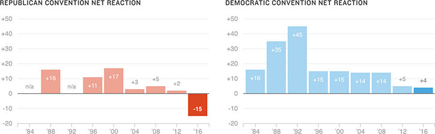

The GOP Convention Made People Less Likely To Vote For Trump
The below chart shows the share of Americans who said a party’s convention made them more likely to vote for the candidate, minus the share who said less likely. This year, 36 percent of Americans said the Republican convention made them more likely to vote for Donald Trump, while 51 percent — 15 points more — said the convention made them less likely to vote for him.
